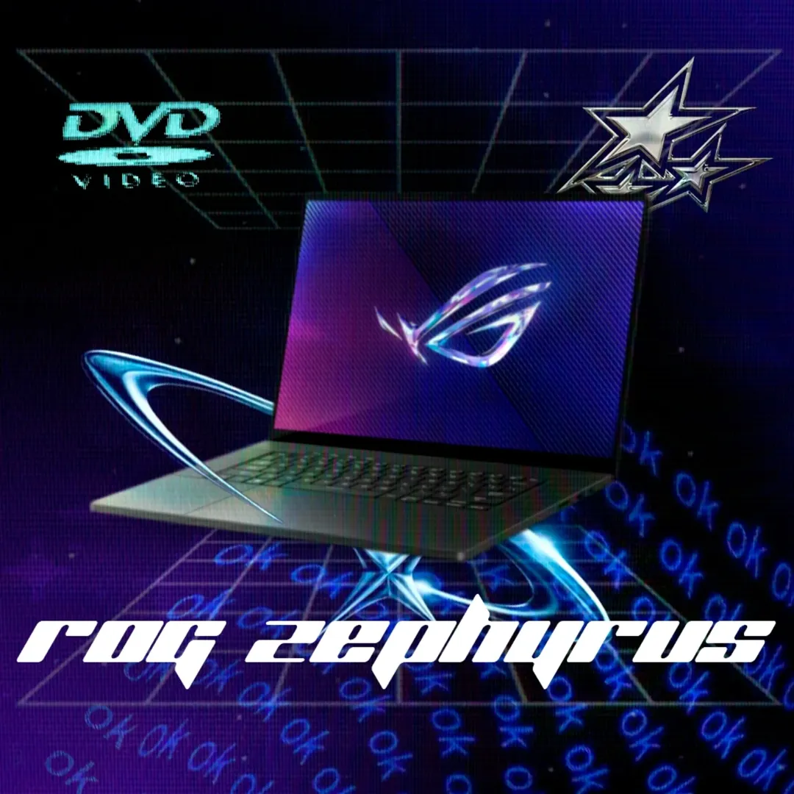
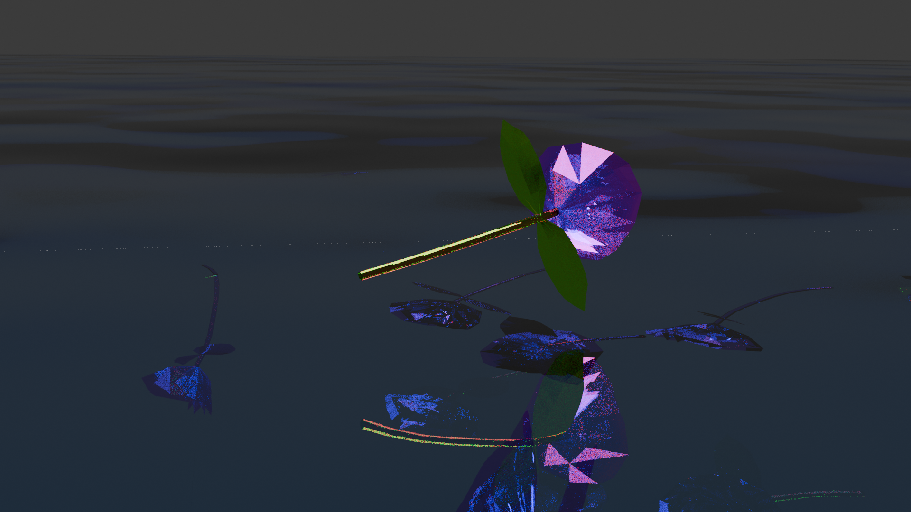
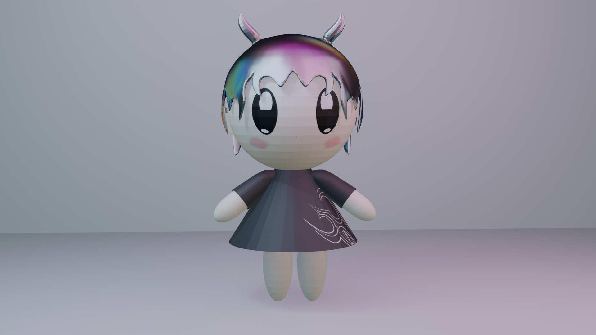

Mi trabajo
Soy Ingeniero Multimedia y editor audiovisual con más de 3 años de experiencia desarrollando proyectos visuales enfocados en transmitir ideas, contar historias y generar impacto a través del video. Mi enfoque principal está en la edición y postproducción audiovisual, combinando narrativa, ritmo, diseño visual y creatividad para construir piezas modernas y de alta calidad para diferentes plataformas digitales. He trabajado en proyectos institucionales, documentales y podcasts para empresas y organizaciones, participando en procesos de edición, identidad visual y creación de contenido audiovisual profesional.
Me caracterizo por adaptarme constantemente a las nuevas tecnologías y herramientas de la industria audiovisual, incorporando flujos de trabajo apoyados en inteligencia artificial para optimizar procesos creativos y mejorar resultados. Además, tengo experiencia trabajando en entornos Windows y Linux, manejando diferentes softwares de edición y producción según las necesidades de cada proyecto. Mi objetivo es crear contenido audiovisual que conecte con las personas, comunique con claridad y aporte valor real a cada producción o marca.
Contáctame
Producción Destacada
Productividad
Como editor de video, pongo la creatividad en el centro de cada proyecto, entendiendo que esta no debe limitarse únicamente a las ideas, sino también reflejarse en cómo se trabaja. Por eso, no solo me enfoco en generar conceptos originales, sino en pulir constantemente mis procesos para que cada parte del flujo de trabajo contribuya a potenciar el resultado final.
Optimizo mi productividad mediante flujos de trabajo organizados, atajos de teclado personalizados y plantillas preconfiguradas, lo que me permite entregar proyectos de alta calidad en tiempos récord sin sacrificar detalle ni emoción. Mi enfoque metódico garantiza eficiencia, pero es mi atención al detalle lo que da vida a cada corte, transición y ritmo narrativo.
Además, creo firmemente en el trabajo en conjunto, donde la colaboración fluida con clientes, directores o creativos permite que las ideas evolucionen y se transformen en piezas audiovisuales memorables. Porque en la edición, la creatividad no se limita a lo que se muestra en pantalla, sino que también vive en la forma en que nos comunicamos, interpretamos y transformamos cada historia en una experiencia visual única.